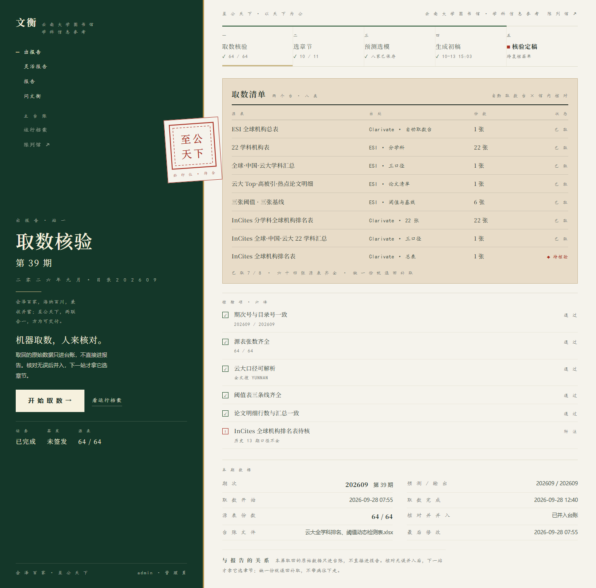
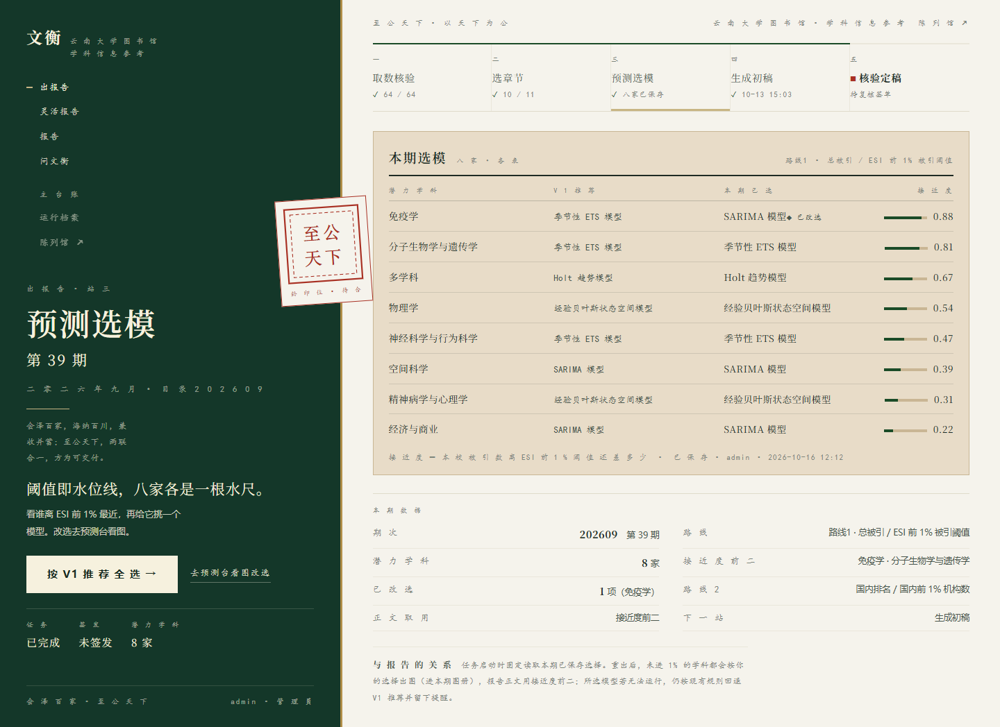
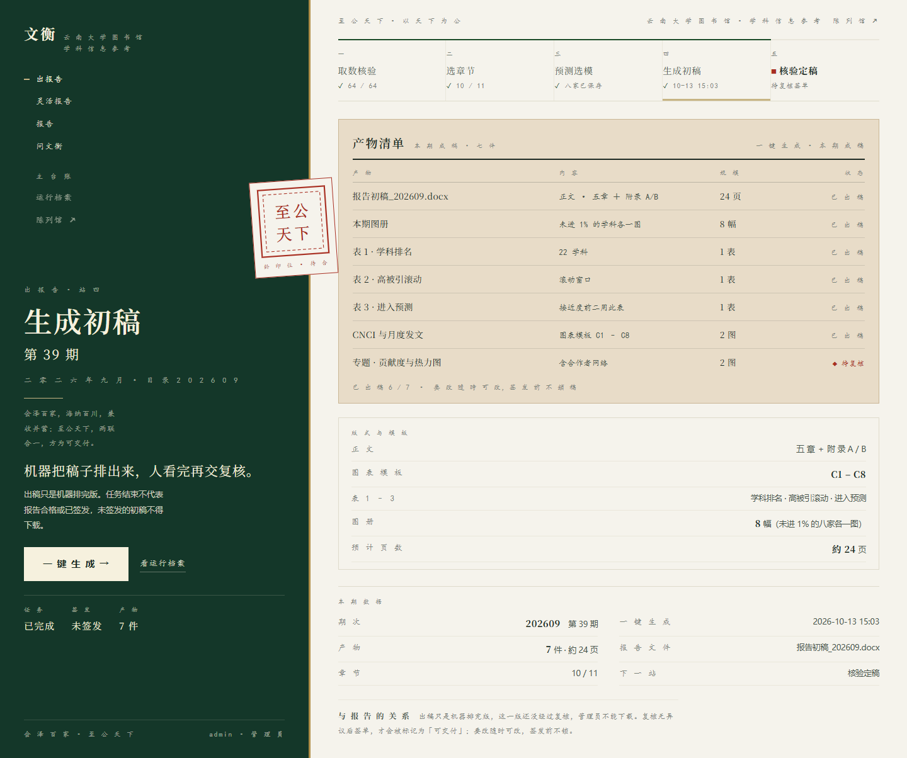
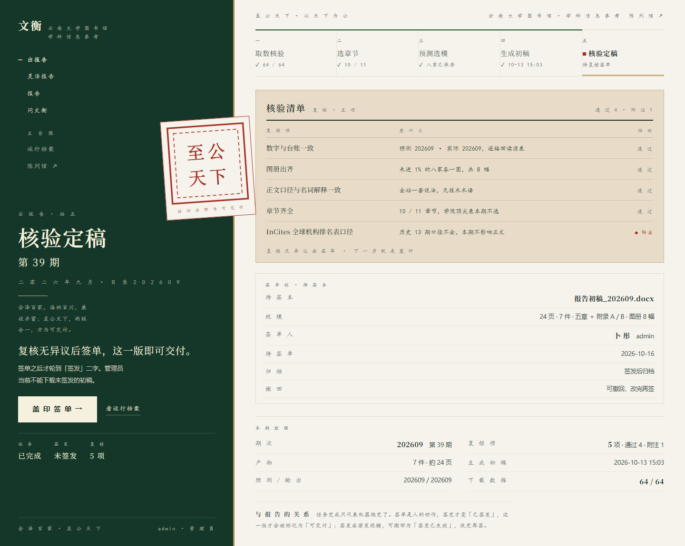

一期数据，一次取齐。
机器跑的那一步叫「取数」，人核对的那一步叫「取数核验」。两步合成一屏，屏题就是步骤名。
缺哪张表、哪一列，逐条写明，补上重跑。
22 个学科在监测 ｜ 14 个已进 ESI 全球前 1%
云南大学图书馆 · 学科信息参考 · 2026 年馆藏
四站走完，才允许装帧。每一步都留痕，每一步都能回去看。

机器跑的那一步叫「取数」，人核对的那一步叫「取数核验」。两步合成一屏，屏题就是步骤名。
缺哪张表、哪一列，逐条写明，补上重跑。
22 个学科在监测 ｜ 14 个已进 ESI 全球前 1%

每个学科到前 1% 还有多远，是「接近度」。按接近度排开，谁先到、谁还远，一屏看完。
模型逐科选，选完才落到下一站。
291 篇热点／高被引 ｜ 逐 学 科 择 模

19 张台账表是全部数字的源头。报告里 704 个数字，704 个标了出处——点得回那一格。
数字只有一个源头，稿子不在前端算任何一个数。
约 20 秒 ｜ 19 张表 ｜ 704 处出处

出稿前机器逐项自检——54 项核对，全部通过才交到你手上。剩下的 7 处待人工，逐条看着补。
复核无异议才签单，签了才签发。
54 项核对 ｜ 7 处待人工
四站讲完「是这么来的」，这里看真产线跑一遍（约 20 秒，可拖进度）。
陈列馆只开放三样内容。要看正文与数值，进工作区——那里每一步都留痕。
工作台里能查的，这里都能问。先问一句，点进去接着聊。